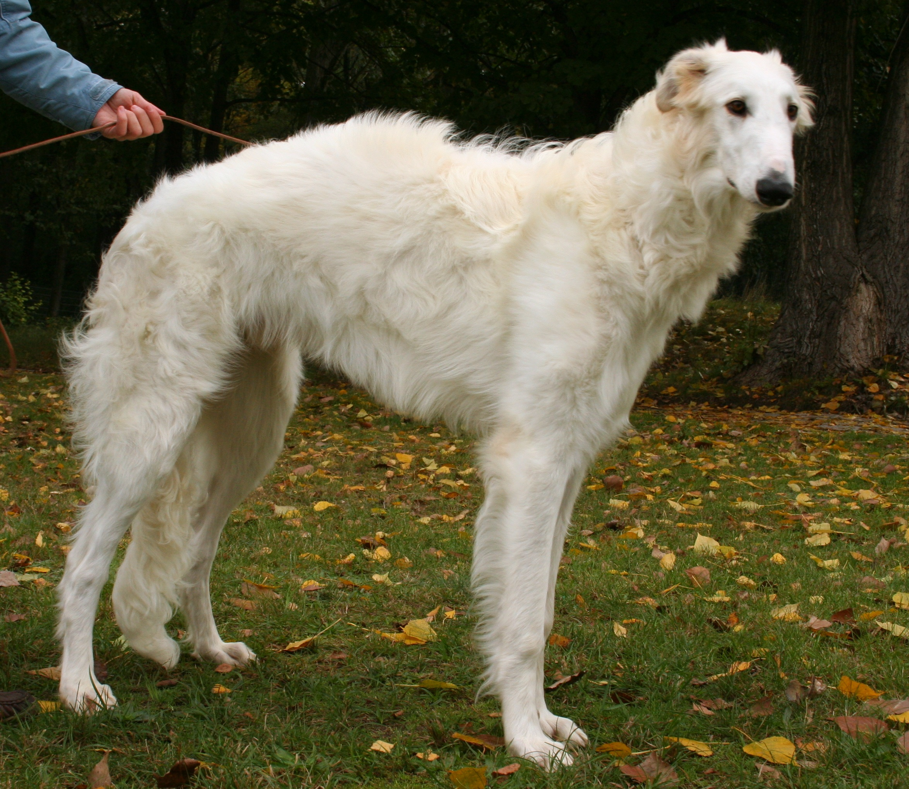

Introduction
The Borzoi dog, once known as the Russian Wolfhound, carries a presence of nobility and quiet strength. Its name, derived from the Russian word for 'fast,' hints at the incredible speed this breed is capable of reaching. Originating in Russia and bred for hunting wild game, the Borzoi boasts a rich history alongside its regal appearance. With a silhouette that is at once sleek and commanding, the Borzoi makes a striking figure that enchants dog lovers worldwide.

History
The Borzoi's ancestry is as intriguing as the breed itself. Developed by crossing Arabian greyhounds with a thick-coated Russian breed, the Borzoi was the dog of choice for Tsars before becoming a symbol of aristocratic Russian life. They were treasured for their hunting prowess, particularly for their ability to pursue and pin large game such as wolves. This breed's history is a tapestry woven through time, reflecting its survival and adaptation through Russia's tumultuous past to the present day.

Characteristics
Borzois are renowned for their distinct physical characteristics, including their lean bodies, long legs, and luxuriant fur. These sighthounds are known for their keen vision and swift, agile movements, often compared to the elegance of a ballerina. The breed's temperament is as soft as their coats, exhibiting a gentle and affectionate nature within the home while maintaining a fierce predatory instinct when on the chase. The combination of grace and power makes the Borzoi a fascinating study in contrasts.

Care & Maintenance
While the Borzoi's coat may give the impression of a high-maintenance breed, their grooming needs are surprisingly moderate. Regular brushing to remove dead hair and minimize shedding is typically sufficient. Their exercise requirements, however, are considerable. As a breed built for speed and endurance, Borzois thrive on regular opportunities to run in safe, enclosed spaces. Nutrition is also key, with a diet rich in protein to support their lean muscle mass and energy needs. A Borzoi's health and happiness are the rewards of attentive care and understanding of their unique breed requirements.